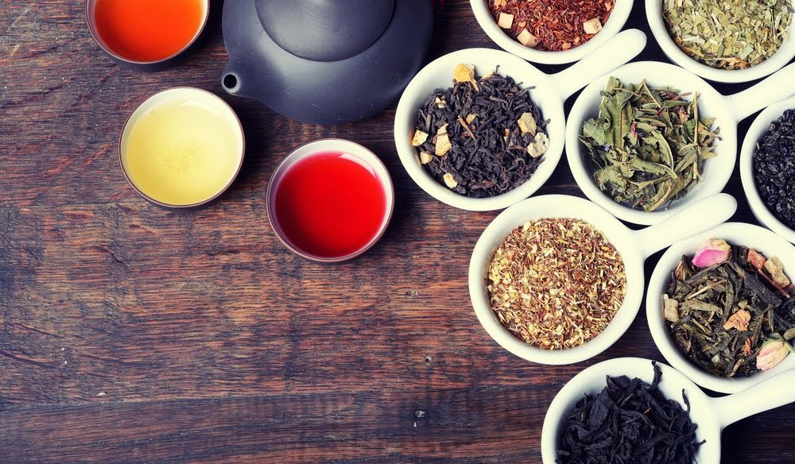

INTRODUZIONE
STORIA DEL TÈ
TIPI DI TÈ
PRODUZIONE
IL MIGLIOR NEGOZIO DI TÈ A ROMA

[immagine:Raccolto da Google]
>If this is coffee,please bring some tea,if this is
tea,bring me some coffee.
-Abraham Lincon
QUESTO SITO RIGUARDA IL TÈ
PRODUZIONE Di TÈ NEL MONDO:
La bevanda più amata del mondo, nasce in Cina che, ancor oggi, mantiene il primato come principale produttore di
tè a livello globale.
Noi italiani pensiamo che la miglior bevanda calda che si possa desiderare sia il
caffè. Tuttavia, nel resto del mondo la pensano diversamente
e, a parte l’acqua, è il tè la bevanda più
popolare.
E non si tratta di una moda passeggera. Sono migliaia di anni che il tè è popolare, fin da quando
è nato in
Cina come bevanda medicinale. Ma quando nel 17° secolo cominciò a diffondersi nel Regno Unito, iniziò un vero
boom dei consumi anche
su scala globale.
Con una domanda di tè così elevata, la produzione su larga scala si è diffusa in tutto il mondo, anche se il
paese che mantiene il primato
è la Cina.

Sulla base delle statistiche dell’ONU circa la produzione globale del 2017,
ecco quali sono le 10 principali
nazioni produttrici di tè nel mondo:
10 principali nazioni produttrici di tè-
| PAESE |
PRODUZIONE ANNUA
(TONNELLATE) |
| 1) CINA |
2.473.443 ton |
| 2) INDIA |
1.325.050 ton |
| 3) KENYA |
439.857 ton |
| 4) SRILANKA |
349.699 ton |
| 5) VIETNAM |
260.000 ton |
| 6) TURCHIA |
234.000 ton |
| 7) INDONESIA |
139.362 ton |
| 8) MYANMAR |
104.743 ton |
| 9) IRAN |
100.580 ton |
| 10) BANGLADESH |
81.850 ton |